<aside class="sidebar" [ngClass]="{'collapsed': isCollapsed}">
  <ul>
    <li><a routerLink="/admin">dashboard</a></li>
    <li><a routerLink="/admin/products">Products</a></li>
    <li><a routerLink="/admin/products/add">Add Product</a></li>
    <li>
      <button>
          logout
     </button>
    </li>
  </ul>
  <div class="toggler">
    <button class="toggle" (click)="toggleSidebar()">
      <svg viewBox="0 0 24 24" fill="none" xmlns="http://www.w3.org/2000/svg"><g id="SVGRepo_bgCarrier" stroke-width="0"></g><g id="SVGRepo_tracerCarrier" stroke-linecap="round" stroke-linejoin="round"></g><g id="SVGRepo_iconCarrier"> <path fill-rule="evenodd" clip-rule="evenodd" d="M19.5 8.25H4.5V6.75H19.5V8.25Z" fill="#f2ede7"></path> <path fill-rule="evenodd" clip-rule="evenodd" d="M19.5 12.75H4.5V11.25H19.5V12.75Z" fill="#f2ede7"></path> <path fill-rule="evenodd" clip-rule="evenodd" d="M19.5 17.25H4.5V15.75H19.5V17.25Z" fill="#f2ede7"></path> </g></svg>
    </button>
  </div>
</aside>
